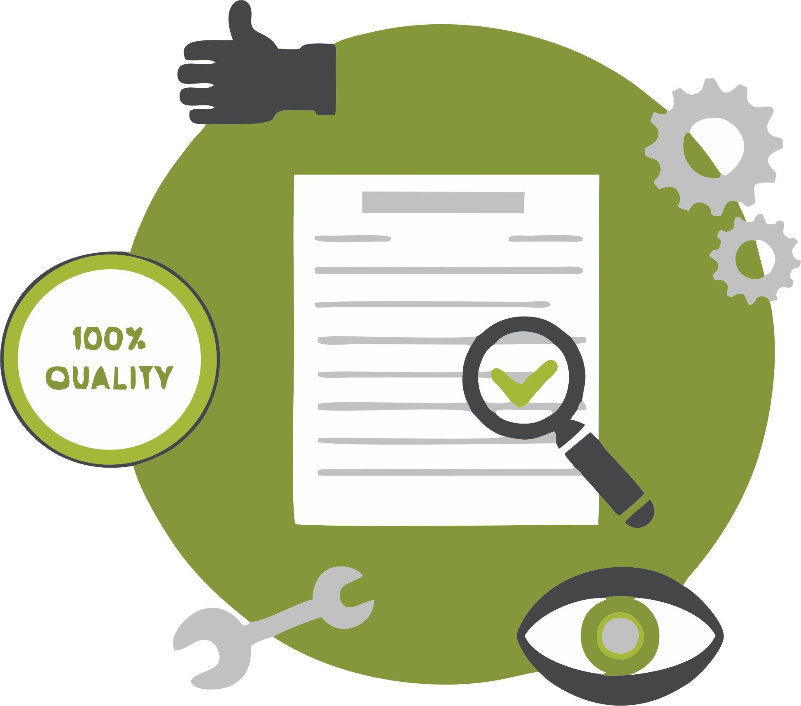

El Aseguramiento de la Calidad del Software es el conjunto de actividades planificadas y sistemáticas necesarias para aportar la confianza que el software satisfará los requisitos dados de calidad. Este aseguramiento se diseña para cada aplicación antes de comenzar a desarrollarla y no después.
